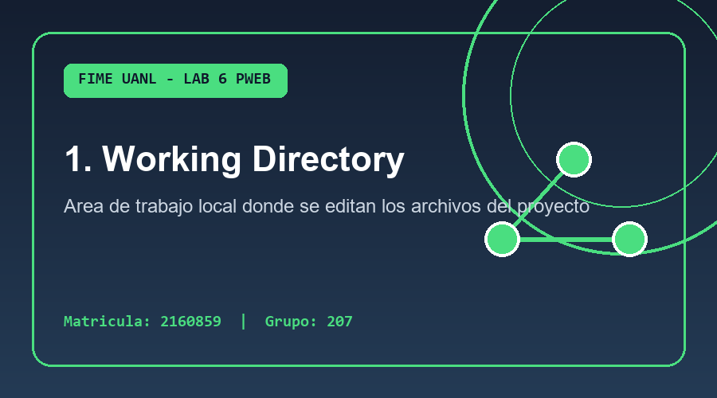
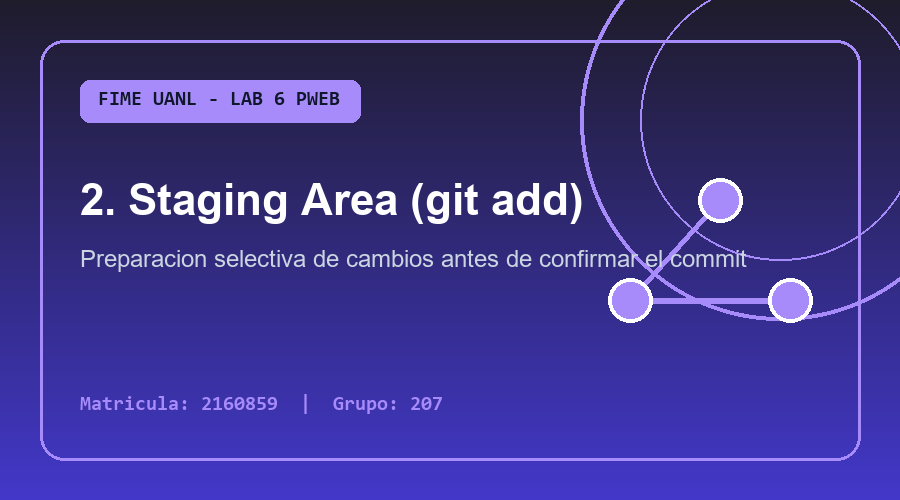
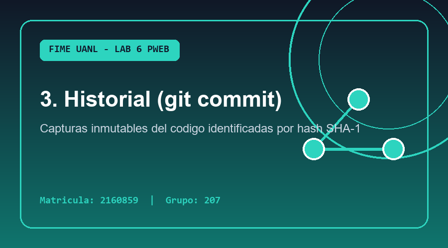

¿Cómo funciona Git internamente?
Párrafo 1: Git es un sistema de control de versiones distribuido (DVCS) diseñado por Linus Torvalds para gestionar proyectos de software con rapidez, seguridad y eficiencia. A diferencia de los sistemas centralizados antiguos, cada desarrollador que clona un repositorio dispone de una copia íntegra de todo el historial de cambios en su propia computadora, permitiendo trabajar sin conexión a internet y garantizando un respaldo completo ante cualquier eventualidad en el servidor central.
Párrafo 2: Dentro de un repositorio local de Git existen tres áreas fundamentales por las que transitan nuestros archivos: el Directorio de Trabajo (Working Directory), donde creamos y modificamos archivos HTML, CSS o JavaScript; el Área de Preparación (Staging Area o Index), a la cual enviamos los archivos mediante el comando git add -A para seleccionar qué cambios formarán parte de la siguiente versión; y el Repositorio Local (.git), donde se almacenan permanentemente las confirmaciones.
Párrafo 3: Cuando ejecutamos el comando git commit -m "mensaje", Git toma todos los archivos presentes en el área de preparación y genera una instantánea inmutable identificada por un código criptográfico único (hash SHA-1 de 40 caracteres), junto con el nombre del autor, correo electrónico, fecha exacta y mensaje descriptivo. De esta manera podemos auditar el historial con git log o regresar a cualquier estado previo del proyecto en segundos.
Las 3 Etapas del Flujo Local en Git

1. Directorio de Trabajo
Aquí editas tus archivos como index.html. Al ejecutar git status, los archivos nuevos o modificados aparecen resaltados en color rojo.

2. Área de Preparación
Al usar git add -A, tus archivos pasan al Staging Area y se muestran en color verde al verificar con git status.

3. Repositorio Local (.git)
Con git commit -m "..." se guarda el cambio de forma definitiva en el historial local, consultable mediante git log.
Glosario Interactivo de Comandos Locales
-A (o --all) asegura que ningún archivo quede fuera de la preparación.
git commit -m "mensaje" registra los cambios preparados en el repositorio con una descripción clara, mientras que git log lista en orden cronológico inverso todos los commits realizados junto con su autor, fecha y código identificador.